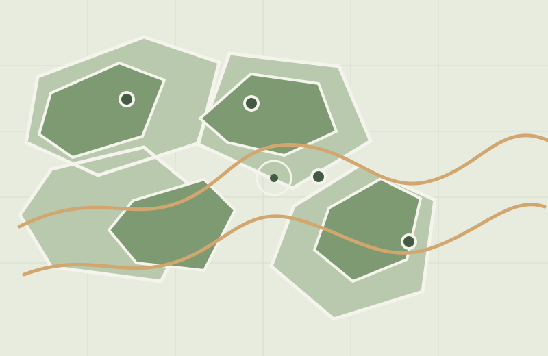
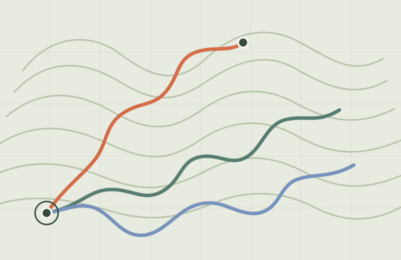

AGUSTUS — NOVEMBER 2026
GIS Analyst · Tim Ekspedisi Patriot
Kementerian Transmigrasi RI
Pemetaan drone, pengolahan ortofoto, survei geotagging, dan penyajian data melalui peta serta WebGIS.LULUSAN TEKNIK GEODESI · GIS & SURVEI
Saya Muhaimin, lulusan Teknik Geodesi Universitas Diponegoro. Berpengalaman dalam survei GNSS dan Total Station, pengolahan data spasial, pemetaan tematik, serta pengembangan WebGIS.
01 — PROFIL
Saya lulusan Teknik Geodesi Universitas Diponegoro dengan pengalaman sebagai surveyor dan GIS analyst. Kompetensi saya mencakup akuisisi data GNSS dan Total Station, validasi data lapangan, serta pengolahan dan analisis data geospasial.
Saya mengintegrasikan hasil survei, citra, dan data spasial menjadi peta tematik maupun WebGIS. Saya siap berkontribusi dalam pekerjaan survei, pemetaan, dan analisis geospasial secara teliti dan bertanggung jawab.
02 — KEAHLIAN TEKNIS
Perangkat lunak, instrumen, dan metode yang saya gunakan dalam pekerjaan geospasial.
Sarjana Teknik Geodesi
Universitas Diponegoro · 2019–2023 · IPK 3,19 / 4,00
03 — PENGALAMAN KERJA
AGUSTUS — NOVEMBER 2026
Kementerian Transmigrasi RI
Pemetaan drone, pengolahan ortofoto, survei geotagging, dan penyajian data melalui peta serta WebGIS.AGUSTUS — DESEMBER 2025
Kementerian Transmigrasi RI
Survei kawasan Tampolore, klasifikasi tutupan lahan, dan pemetaan sebaran komoditas unggulan.FEBRUARI 2024 — JUNI 2025
KJSB Muliawan
Akuisisi GNSS, digitasi persil, validasi lokasi pelanggan PDAM, dan pembaruan basis data spasial.JANUARI — MARET 2022
BPBD Provinsi Nusa Tenggara Barat
Pemetaan dan analisis kawasan rawan banjir di Kabupaten Lombok Tengah.04 — PROYEK PILIHAN
Studi kasus yang menampilkan cara saya mengumpulkan, mengolah, menganalisis, dan menyajikan data geospasial.

ILUSTRASI DATA SPASIALTAMPOLORE, POSO · 2025
Klasifikasi citra dan verifikasi lapangan untuk memetakan tutupan lahan serta sebaran kopi di empat kecamatan.
 ILUSTRASI DATA SPASIAL
ILUSTRASI DATA SPASIAL
MATARAM & LOMBOK BARAT · 2024–25
Pemeriksaan posisi pelanggan di lapangan, dilanjutkan digitasi persil dan pembaruan basis data spasial.

ILUSTRASI DATA SPASIALTAMAN NASIONAL TAMBORA · 2023
Empat jalur resmi dihimpun lewat survei GPS dan wawancara, lalu disajikan dalam WebGIS interaktif.
05 — SERTIFIKAT & PENGHARGAAN
Sertifikat pelatihan dan kompetensi, serta apresiasi atas kontribusi dalam pekerjaan geospasial.
Kementerian Transmigrasi RI · 2025

Engineering Academy · 2024
Ksara · 2024
06 — KONTAK
Saya terbuka untuk kesempatan kerja di bidang Teknik Geodesi, survei, GIS, pemetaan, dan pengelolaan data geospasial. Silakan hubungi saya melalui email atau LinkedIn.
muhaiminhanafill@gmail.com